Praat je dagrapport in
Houd de knop vast en vertel je dag op de bouw. Sitesay maakt er op je telefoon mensen, werk, materiaal en problemen van – en een dagrapport als PDF.
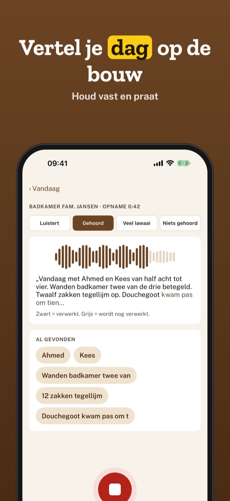
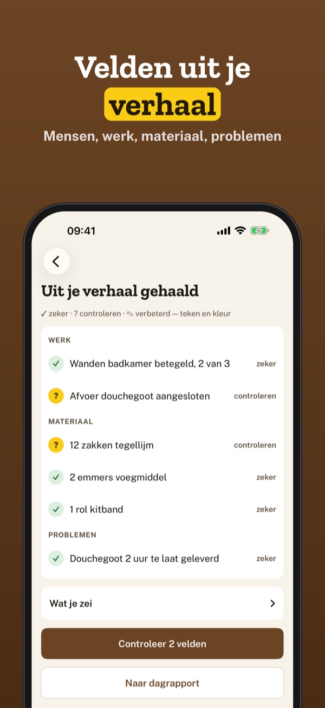
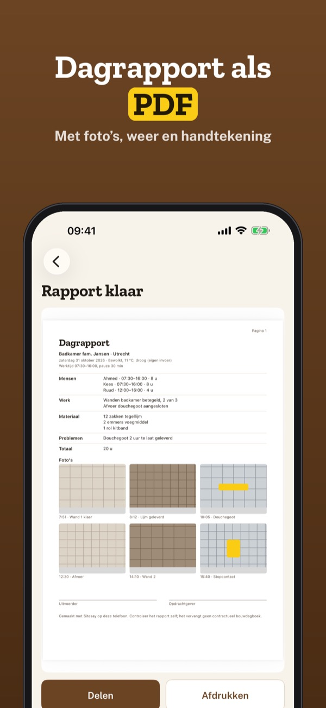
Sitesay is het bouwdagboek voor wie met zijn handen werkt. Vertel aan het eind van de dag wat er gebeurd is; je telefoon zet het om in tekst en vult het dagrapport voor je in.
Eén project, de laatste 7 dagen, inspreken, velden en PDF gebruik je zonder aankoop. Sitesay Plus is een eenmalige aankoop voor onbeperkt projecten, het hele archief, het weekoverzicht als PDF en je eigen bedrijfsnaam op het rapport. Geen abonnement.
Sitesay stelt velden voor op basis van wat je zegt; controleer het rapport altijd zelf. Op een lawaaiige bouwplaats kan de spraakherkenning woorden missen. Sitesay is niet verbonden aan een brancheorganisatie of overheid.
Terms of Use (EULA): https://www.apple.com/legal/internet-services/itunes/dev/stdeula/
Privacy: https://baytechbv.github.io/privacy/sitesay-eu/
Detta il giornale dei lavori
Tieni premuto e racconta la giornata in cantiere. Sitesay trasforma la voce, sul telefono, in persone, lavori, materiali e problemi – e crea il rapportino PDF.
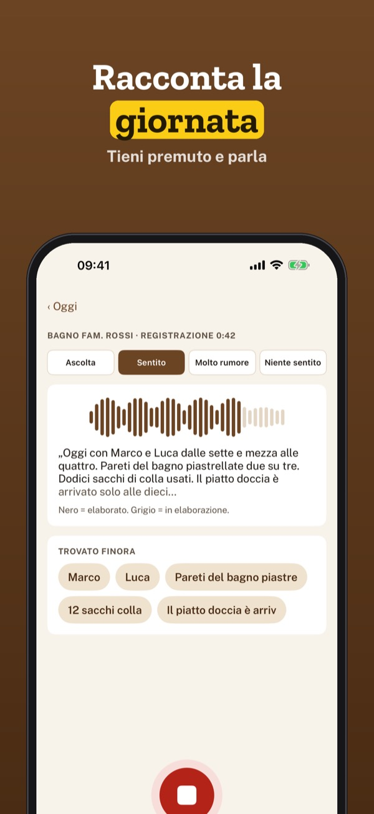
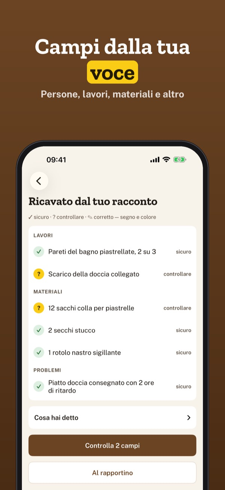
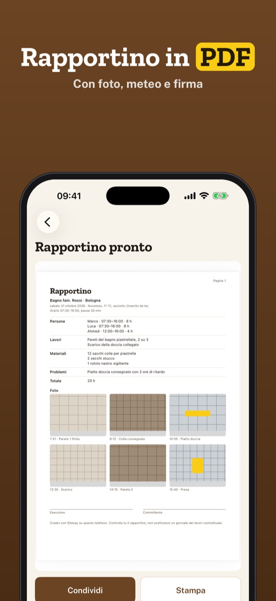
Sitesay è il giornale dei lavori per chi lavora con le mani. Racconta a fine giornata cosa è successo: il telefono lo trascrive e compila il rapportino per te.
Un cantiere, gli ultimi 7 giorni, dettatura, campi e PDF si usano senza acquisto. Sitesay Plus è un acquisto unico per cantieri illimitati, l’archivio completo, il riepilogo settimanale in PDF e il nome della tua impresa sul rapportino. Nessun abbonamento.
Sitesay propone i campi in base a ciò che dici; controlla sempre il rapportino. In un cantiere rumoroso il riconoscimento vocale può perdere parole. Sitesay non è collegata ad associazioni di categoria o enti pubblici.
Terms of Use (EULA): https://www.apple.com/legal/internet-services/itunes/dev/stdeula/
Privacy: https://baytechbv.github.io/privacy/sitesay-eu/
Tagesbericht einsprechen
Halte gedrückt und erzähl deinen Tag auf der Baustelle. Sitesay macht daraus auf dem Handy Personen, Arbeiten, Material und Probleme – und einen PDF-Bericht.
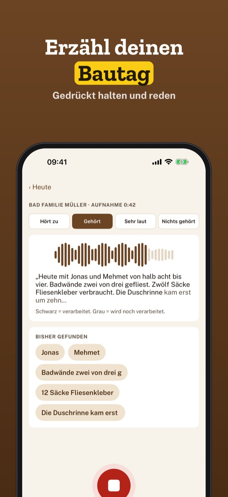
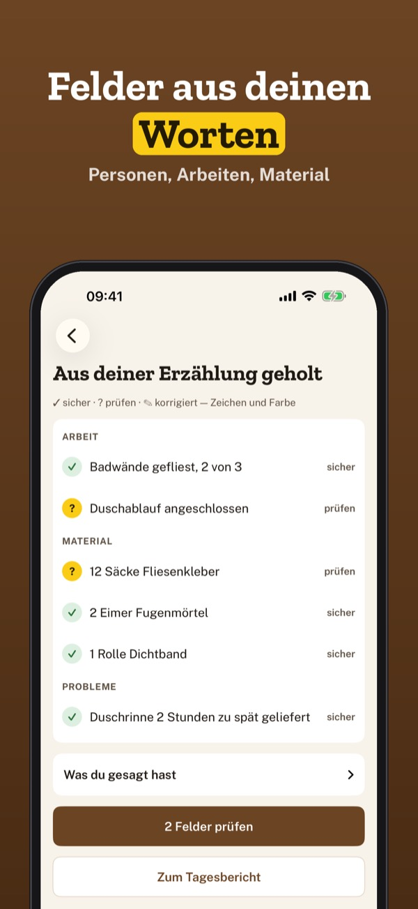
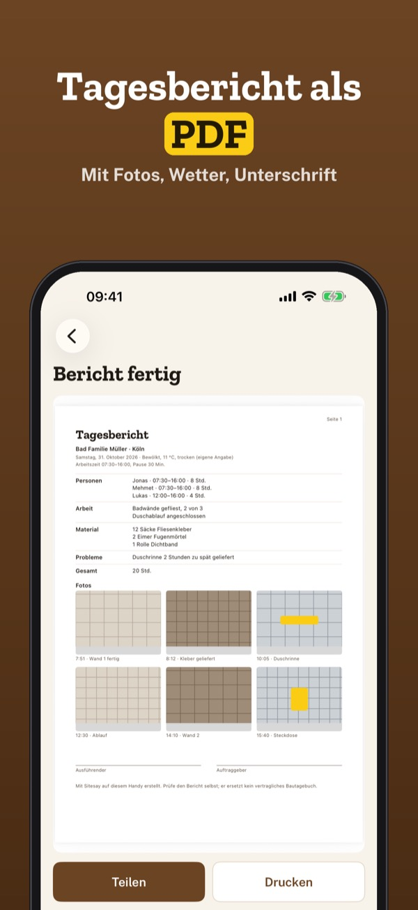
Sitesay ist das Bautagebuch für alle, die mit den Händen arbeiten. Erzähl am Ende des Tages, was passiert ist – dein Handy schreibt mit und füllt den Tagesbericht aus.
Ein Projekt, die letzten 7 Tage, Einsprechen, Felder und PDF nutzt du ohne Kauf. Sitesay Plus ist ein Einmalkauf für unbegrenzt Projekte, das ganze Archiv, die Wochenübersicht als PDF und deinen Firmennamen auf dem Bericht. Kein Abo.
Sitesay schlägt Felder aus deinen Worten vor; prüfe den Bericht immer selbst. Auf einer lauten Baustelle kann die Spracherkennung Wörter verpassen. Sitesay ist mit keinem Verband und keiner Behörde verbunden.
Terms of Use (EULA): https://www.apple.com/legal/internet-services/itunes/dev/stdeula/
Privacy: https://baytechbv.github.io/privacy/sitesay-eu/
Dictez votre rapport du jour
Maintenez le bouton et racontez votre journée sur le chantier. Sitesay en tire, sur le téléphone, équipe, travaux, matériaux et problèmes – puis un rapport PDF.
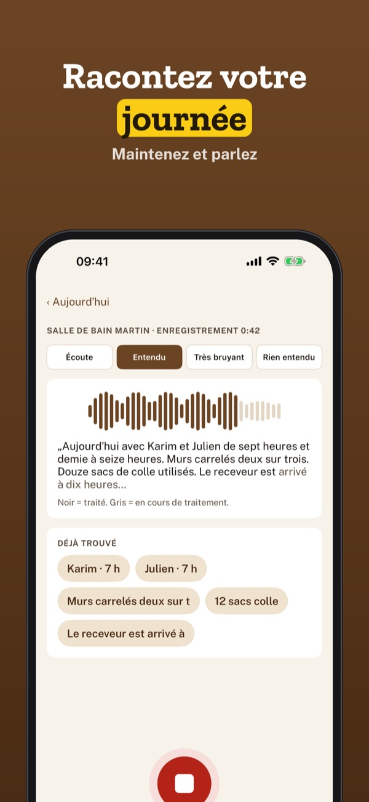
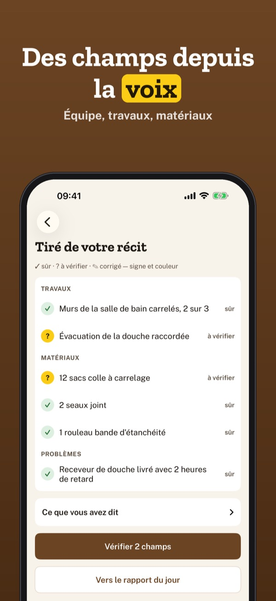
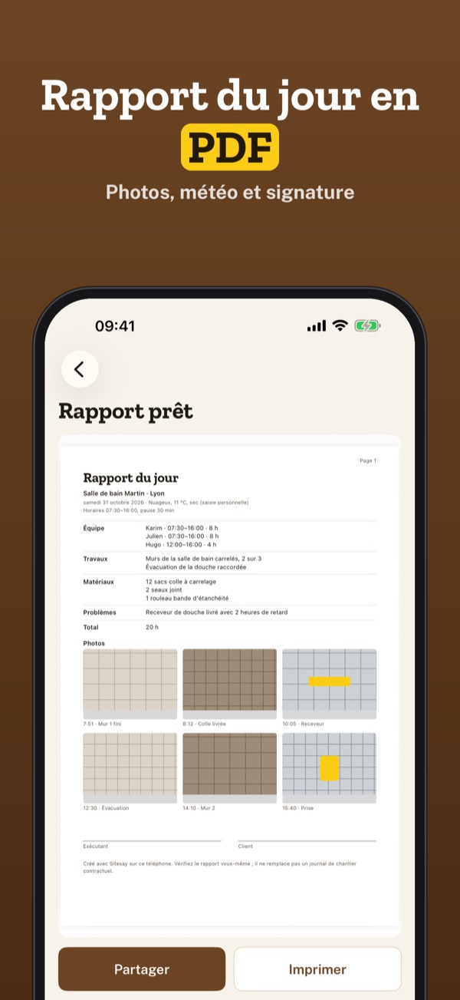
Sitesay est le journal de chantier de ceux qui travaillent de leurs mains. Racontez en fin de journée ce qui s’est passé : le téléphone transcrit et remplit le rapport du jour.
Un chantier, les 7 derniers jours, la dictée, les champs et le PDF s’utilisent sans achat. Sitesay Plus est un achat unique pour des chantiers illimités, toutes les archives, le bilan de la semaine en PDF et le nom de votre entreprise sur le rapport. Sans abonnement.
Sitesay propose des champs à partir de vos paroles ; vérifiez toujours le rapport. Sur un chantier bruyant, la reconnaissance vocale peut manquer des mots. Sitesay n’est liée à aucune fédération ni administration.
Terms of Use (EULA): https://www.apple.com/legal/internet-services/itunes/dev/stdeula/
Privacy: https://baytechbv.github.io/privacy/sitesay-eu/